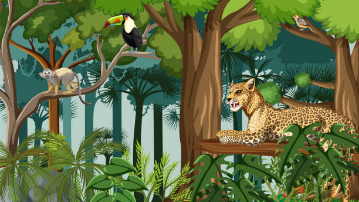
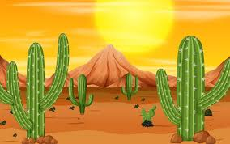
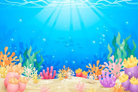
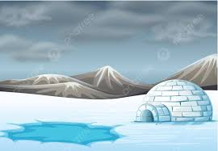
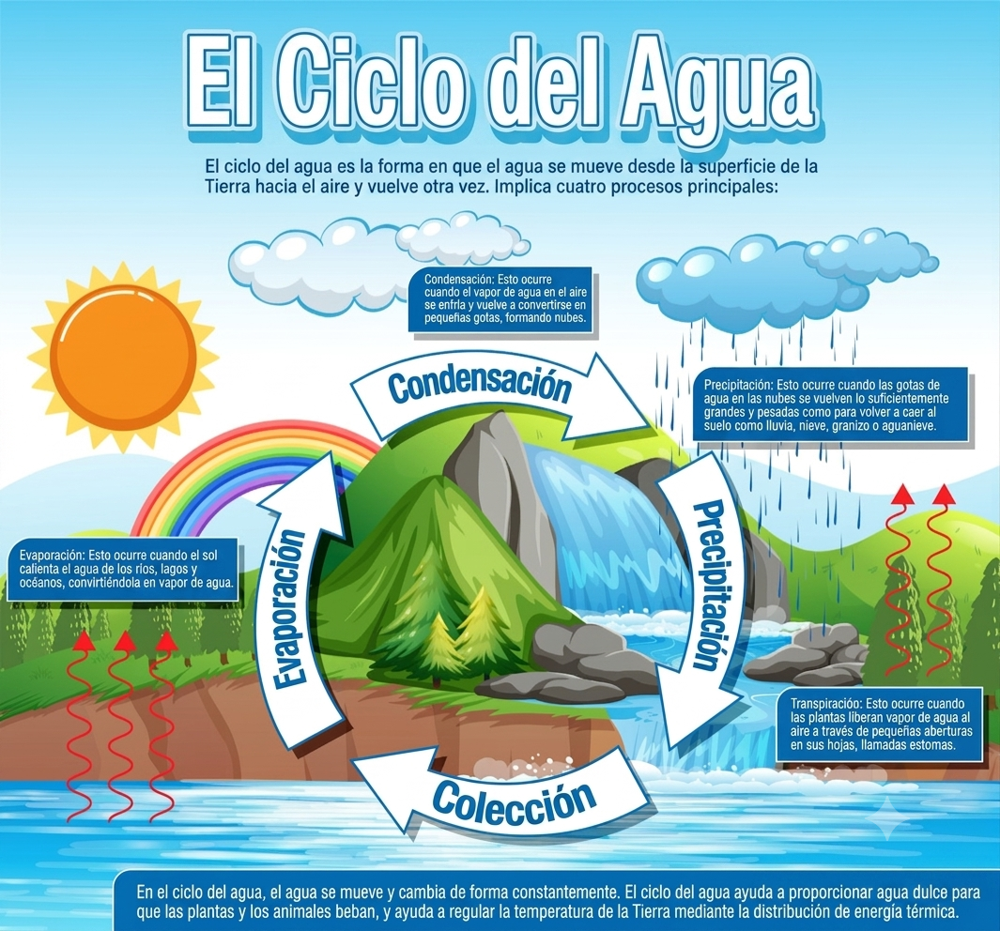

Explora el Mundo Natural
Animales, plantas, el agua y el planeta. ¡Conviértete en un pequeño científico!
Descubrir
Animales, plantas, el agua y el planeta. ¡Conviértete en un pequeño científico!
DescubrirSomos máquinas increíbles. ¡Aprende cómo funcionamos por dentro!
Es el director de orquesta. Controla todo lo que haces: pensar, moverte, sentir.
Bomba que impulsa la sangre. ¡Late más de 100,000 veces al día!
Respiran por ti. Toman oxígeno del aire y eliminan dióxido de carbono.
206 huesos te dan forma y te protegen. ¡Como una armadura!
El corazón del tamaño de un puño. ¡Late más de 100,000 veces al día!
Las plantas nos dan oxígeno, comida y medicina. ¡Son súper importantes!
Raíz: absorbe agua y nutrientes.
Tallo: transporta la savia.
Hoja: hace la fotosíntesis.
Flor: produce frutos y semillas.
Las plantas usan la luz del sol, agua y aire para fabricar su alimento. ¡Y liberan oxígeno!
Las flores se convierten en frutos. Dentro de ellos están las semillas, que dan vida a nuevas plantas.
Cada animal vive donde mejor se adapta. ¡Conócelos!

Jaguares, monos, guacamayas, perezosos.

Camellos, serpientes, escorpiones, zorros.

Ballenas, tiburones, peces de colores, delfines.

Osos polares, pingüinos, focas, morsas.
El agua viaja sin parar por el planeta. ¡Sigue su recorrido!

Vivimos en un planeta llamado Tierra. ¿Conoces a sus vecinos?
Es una estrella. Nos da luz y calor. ¡Es enorme!
Nuestro hogar. Tiene agua, aire y vida. ¡El único planeta con vida que conocemos!
Es el satélite de la Tierra. Brilla de noche porque refleja la luz del Sol.
Mercurio, Venus, Tierra, Marte, Júpiter, Saturno, Urano y Neptuno. ¡Cada uno es único!
Pequeñas acciones pueden salvar el mundo. ¡Tú puedes ayudar!

🍎 Cáscara de manzana
Arrastra cada animal al grupo correcto.
Experimentos interactivos para aprender en casa.
¿Qué ves cuando observas una hoja de cerca?
¿Qué insecto te gustaría ver con una lupa?